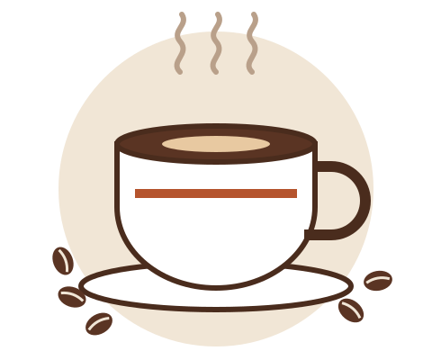
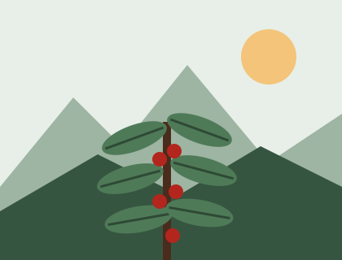

Grano mexicano
Compramos directo a cooperativas de Coatepec y Chiapas y tostamos en lotes pequeños cada semana.
Café de especialidad · San Nicolás de los Garza, N. L.
Tostamos granos de productores de Veracruz y Chiapas, horneamos pan todos los días y tenemos mesas con enchufe para que estudies a gusto.

Un lugar pensado para estudiantes, docentes y vecinos: buen café, precios justos y un espacio tranquilo.
Compramos directo a cooperativas de Coatepec y Chiapas y tostamos en lotes pequeños cada semana.
Wi-Fi gratuito, contactos eléctricos en cada mesa y una zona de silencio por las tardes.
Desde las 7:00 para tu primera clase. Pide por adelantado y recoge sin hacer fila.

Nuestra historia
Café Tlalli nació en 2024 como un carrito de café afuera de Ciudad Universitaria. La idea era sencilla: ofrecer café mexicano de calidad a un precio accesible para la comunidad estudiantil.
Hoy tenemos un local pequeño con 30 lugares, un menú de temporada y un programa de descuentos para estudiantes con credencial vigente.
Conoce nuestros servicios| Día | Apertura | Cierre |
|---|---|---|
| Lunes a viernes | 7:00 | 21:00 |
| Sábado | 8:00 | 15:00 |
| Domingo | Cerrado | |
Llevamos café y pan para congresos, juntas y exposiciones de proyectos.